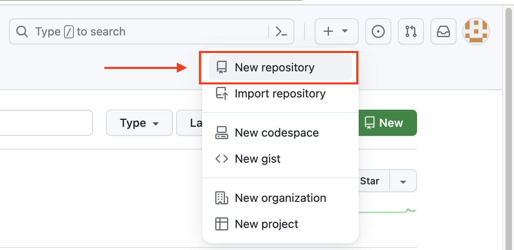
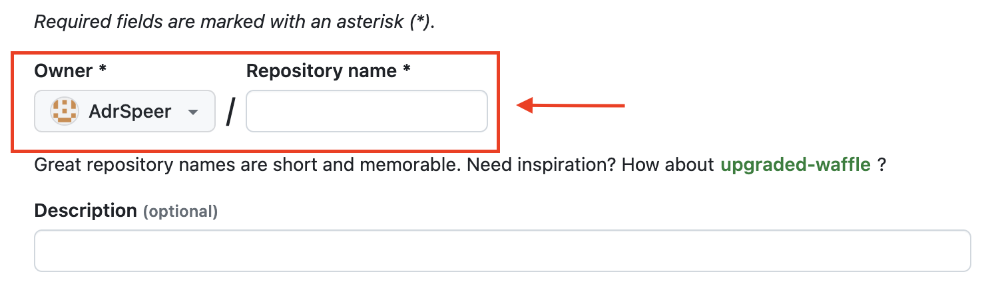
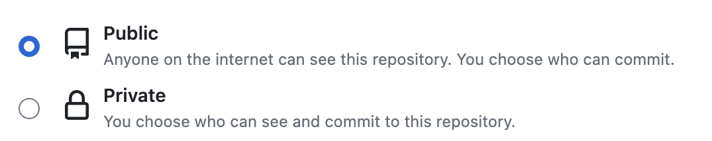

Git-Cheatsheet
Inhaltsverzeichnis
- Repo erstllen
- Basic Befehle
- Branch erstellen und wechseln
- Arbeit durchführen
- Ablauf Merge
- Commit zurück gehen
- Branch löschen
Repo erstellen
-
Wähle in der rechten oberen Ecke einer beliebigen Seite , und klicke
dann auf Neues Repository.

-
Gib einen kurzen, einprägsamen Namen für das Repository ein und
wähle den "Owner" aus

- Wähle eine Sichtparkeitsoption aus

- README und Respository erstellen

Git Befehle Basic
-
git add . -> fügt eine Änderung aus dem
Arbeitsverzeichnis zur Staging-area hinzu.
-
git add FILENAME -> hiermit kann nur eine Datei in die
Staging-area hinzufügen.
-
git commit -m "Text was geändert wurde" -> erstellt
einen neunen commit mit einer Nachricht "Text was geändert wurde"
-
git push -> Uploaded die Dateien die zuvor mit " git
add . " in die Stagging area bewegt worden sind in das Github Repo
-
git log -> alle erstellten Commits werden im Terminal
angezeigt (mit "q" kann ich die Ansicht verlassen)
-
git status -> kann verwendet werden, um
zusammenzufassen, welche Dateien geändert und die für den nächsten
Commit bereitgestellt wurden.
-
git pull -> mit "git pull" lade ich die geänderten
Datein herunter